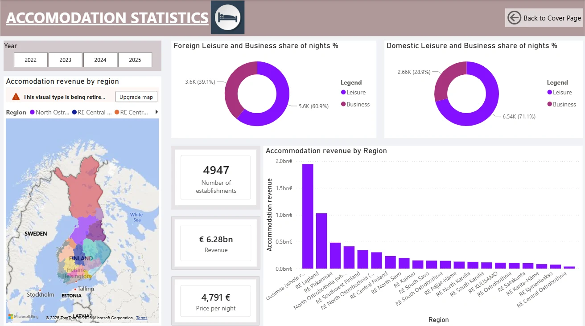
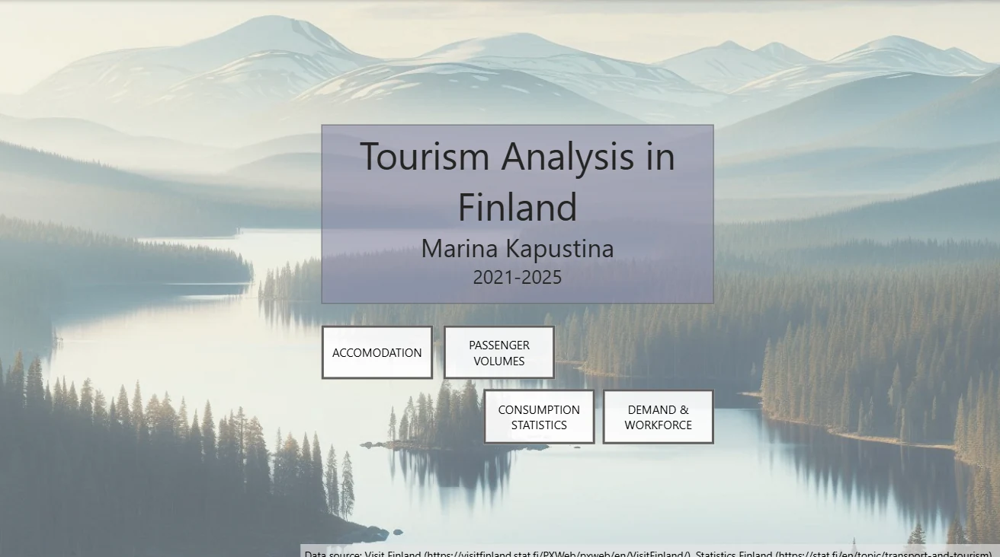
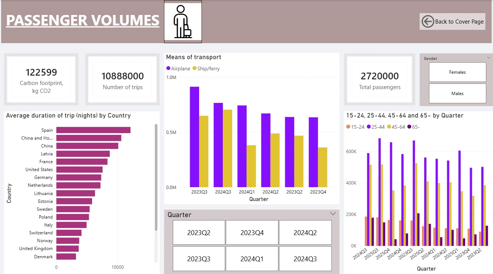
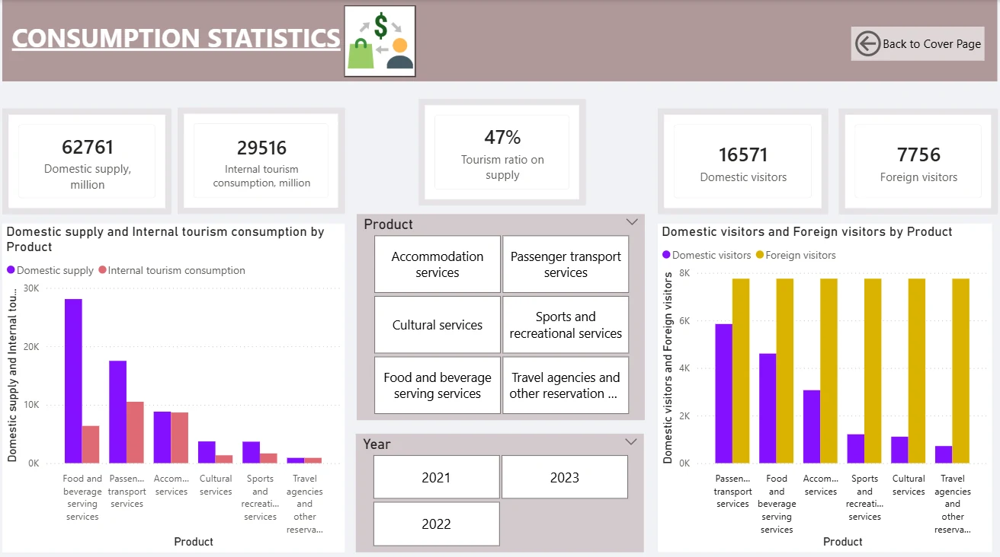
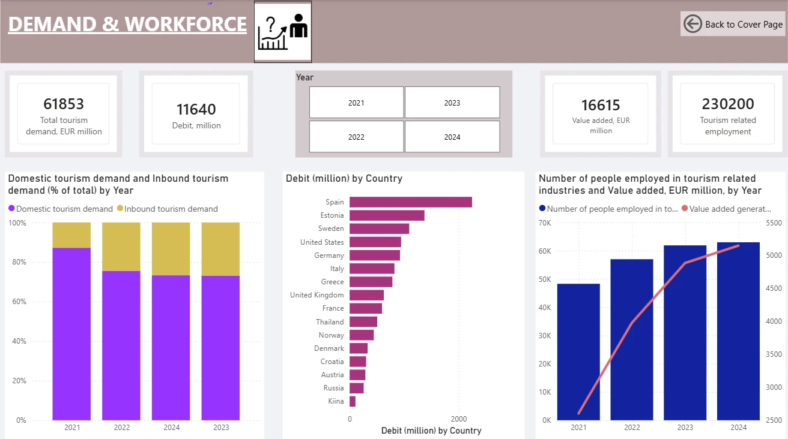
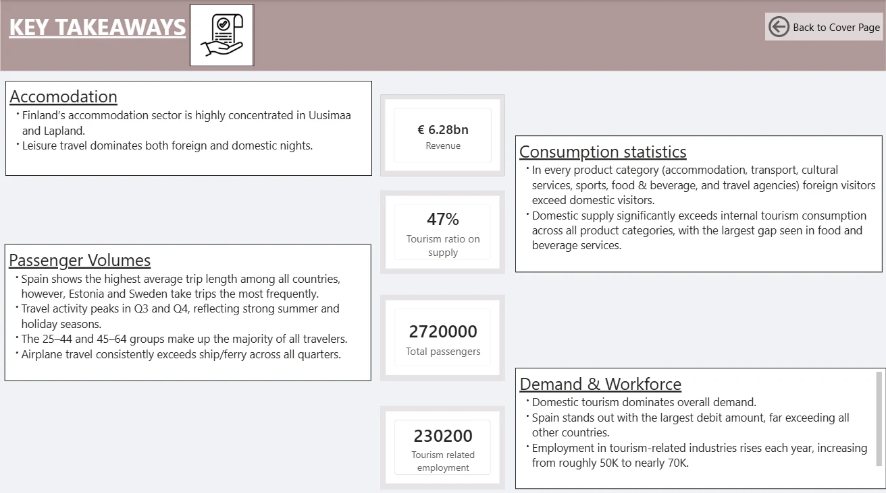

Finnish Tourism Dashboard
A six-page Power BI report on accommodation, passenger volumes, tourism consumption, demand and employment in Finland, built from open data for 2021–2025.

- Year and context
- 2026, final assignment of the Excel ja BI course, Haaga-Helia
- Tools
- Power BI Desktop, Power Query, DAX
- Data
- Visit Finland and Statistics Finland open data, 2021–2025
- Output
- Cover page, four topic pages and a key-takeaways page
The brief
The course set a fictional scenario: a group of tourism entrepreneurs from South America is visiting Finland for the first time and wants an overview of travel and tourism in the country. Working as a data analyst for a travel company, the task was to build an engaging Power BI presentation from open data no older than 2021.
Minimum requirements: combine at least three data files, write at least three DAX measures, and deliver a cover page plus four report pages.
How the report was built
Collect open data
Tables on accommodation revenue by region, passengers, trips and carbon footprint, tourism consumption and supply, demand, GDP and employment, downloaded from Visit Finland and Statistics Finland.
Load and shape the tables
Import into Power BI and add helper year and quarter tables, so that one slicer can filter several sources.
Model and measure
A data model of more than 15 tables with relationships, plus custom DAX measures (the brief asked for at least three).
Design the story
A cover page with navigation buttons, four topic pages with slicers, maps, KPI cards and charts, and a closing page of written takeaways.
Report pages










Findings
Quoted from the report's key-takeaways page.
Accommodation
- Finland’s accommodation sector is highly concentrated in Uusimaa and Lapland.
- Leisure travel dominates both foreign and domestic nights.
Passenger volumes
- Spain shows the highest average trip length among all countries, however, Estonia and Sweden take trips the most frequently.
- Travel activity peaks in Q3 and Q4, reflecting strong summer and holiday seasons.
- The 25–44 and 45–64 groups make up the majority of all travelers.
- Airplane travel consistently exceeds ship/ferry across all quarters.
Consumption
- In every product category (accommodation, transport, cultural services, sports, food & beverage, and travel agencies) foreign visitors exceed domestic visitors.
- Domestic supply significantly exceeds internal tourism consumption across all product categories, with the largest gap seen in food and beverage services.
Demand & workforce
- Domestic tourism dominates overall demand.
- Spain stands out with the largest debit amount, far exceeding all other countries.
- Employment in tourism-related industries rises each year, increasing from roughly 50K to nearly 70K.